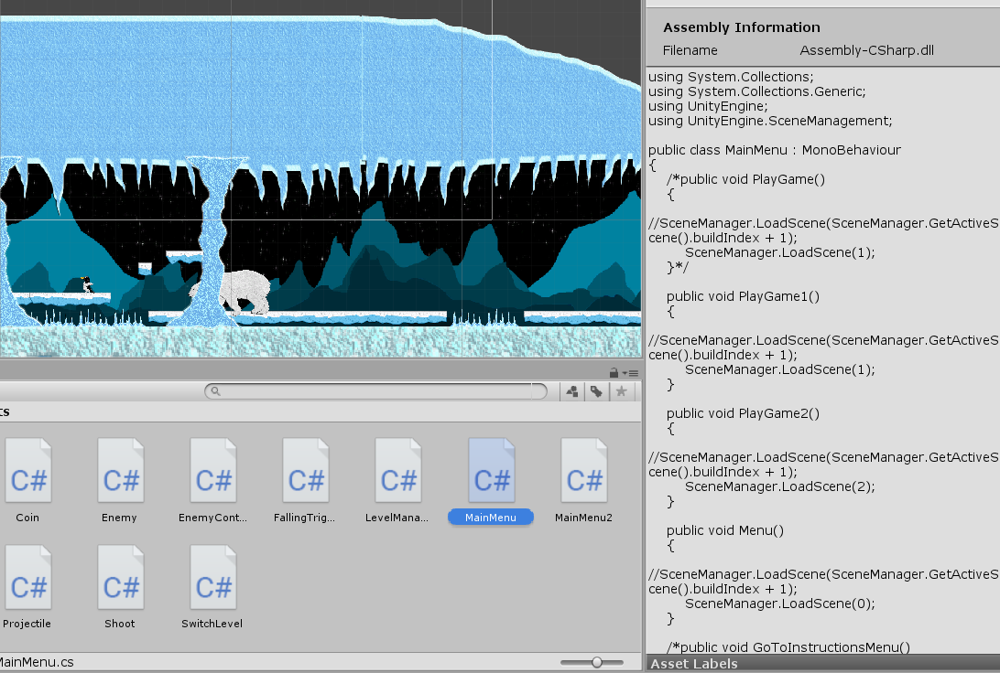
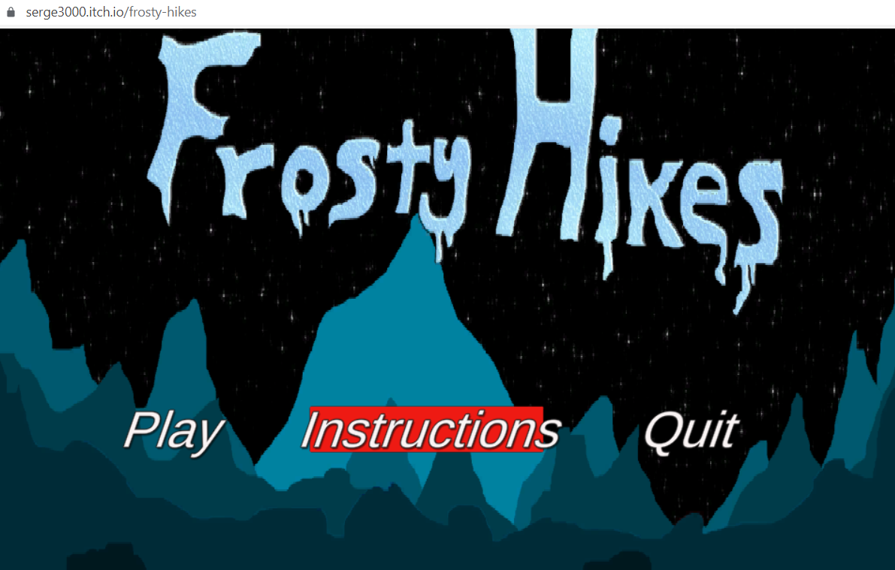
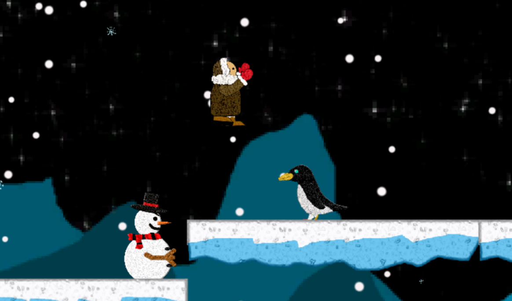
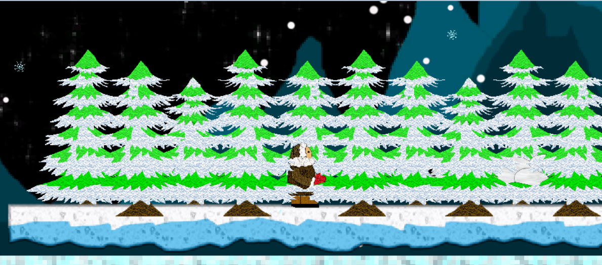
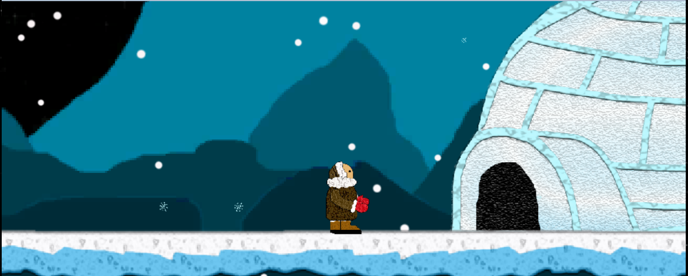
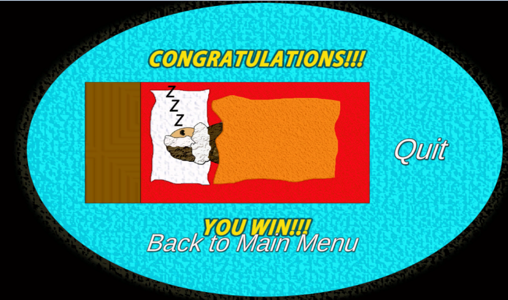

Frosty Hikes, Unity game developed in C#
The game seen on the video above, is called "Frosty Hikes." This is a 2D platform game I created in Unity, in early 2020. The scripts were written in C#. The game features a hiker who is on his way to his home, which is an Igloo. The environment is snowy, and as such, so are the enemies. Creatures such as snowmen, penguins, polar bears, and arctic wolves all are found in the game. Any contact with such creatures, restarts ends the game.
I was given one month to come up with a fun, and yet challenging game, to play in 2D. While it does have some glitches here and there, I love the final product. I am the author of all the graphics, images, animations, tools, scripts, etc. The only thing that was not mine, is the soundtrack that plays during the game. The author kindly authorized me to use it. A year and a half later, I wanted to continue to work on the project on my free time. This was without pay, just for the fun of it. I had the intention of fixing the glitches, and expanding the limits of the game. Unfortunately, the original files got corrupted due to an unforseen event, and I was no longer able to work on it. Thus, the game will remain with those original 4 weeks of work I did in early 2020.
If you would like to play this game, please go to the following link: Frosty Hikes
For now, this project was the most enjoyable I have ever worked in, because I did it out of love. The whole process of planning, designing, and implementing the project, was fun and exciting, especially when I had others play it. Some critics of the game pointed out that the "Easy" mode is still pretty difficult, and the "Hard" mode is insanely hard. Others pointed out at some glitches, such as being able to double jump (pressing upper arrow and space bar at the same time), or having some of the enemies do conflicting patrolling when certain browsers are used. Again, I wish I could make these levels a bit more accessible, but I can no longer update te game. One day, I'll make an even better 2d Game.
    